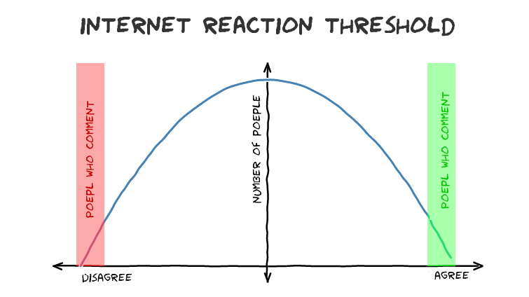

I've noticed a lot of the sites I hang out on are getting more an more vitriolic, there are lots of theories about why this is and I'd like to add the Internet Reaction Threshold to the mix.
Say someone posts a controversial video to YouTube. I like one by …